🏆 中国大学生计算机设计大赛参赛作品
RXcare
RXcare
以科技温暖医疗
无障碍全周期医疗健康服务系统 · App 用户端 + Web 医护端 + 物联网智能拐杖 三端协同，覆盖诊前、诊中、诊后全流程。


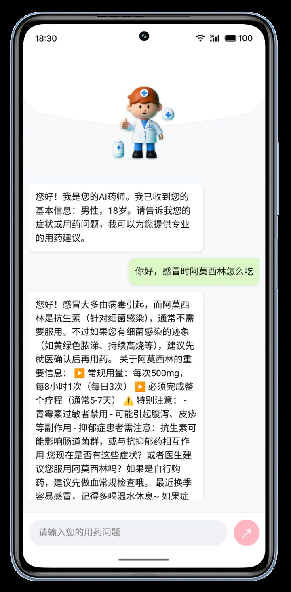
无障碍全周期医疗健康服务系统 · App 用户端 + Web 医护端 + 物联网智能拐杖 三端协同，覆盖诊前、诊中、诊后全流程。

APP 端、Web 医护端、智能拐杖硬件端实时交互，数据贯通整个医疗场景。
标准版 + 关护版双模式设计。基于 uni-app + Vue3 跨平台构建，面向患者提供完整就医闭环。
医生工作台。集成患者管理、智能随访、处方开具等模块，基于 Vue 3 + Element Plus + ECharts 构建。
STM32F103 + 超声波 + IMU + BLE 5.0。跌倒检测、距离预警、一键呼救，实时同步到 App。
每个模块都区分 标准版（普通用户）和 关护版（老年/特殊群体）两套界面。
根据用户群体分流：标准版提供完整功能体验和现代化交互；关护版面向老年人和特殊需求群体，采用更大字体、简化操作流程、明确色彩对比和语音辅助功能，降低数字鸿沟。
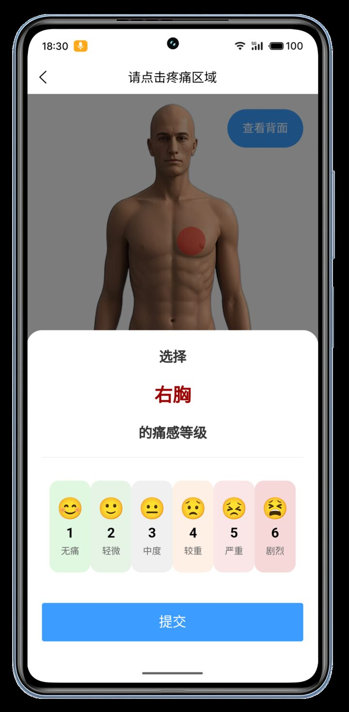
融合人体图部位选择、FPS-R 疼痛等级评估（1-6 级标准化）与多轮智能问询，精准匹配科室与医生，规划"挂号 → 检查 → 取药"全流程就诊路径。
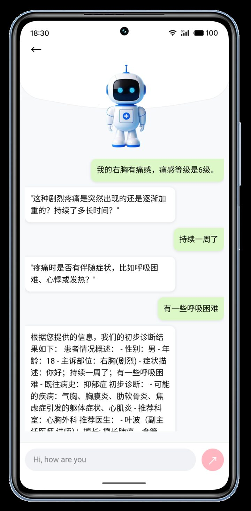
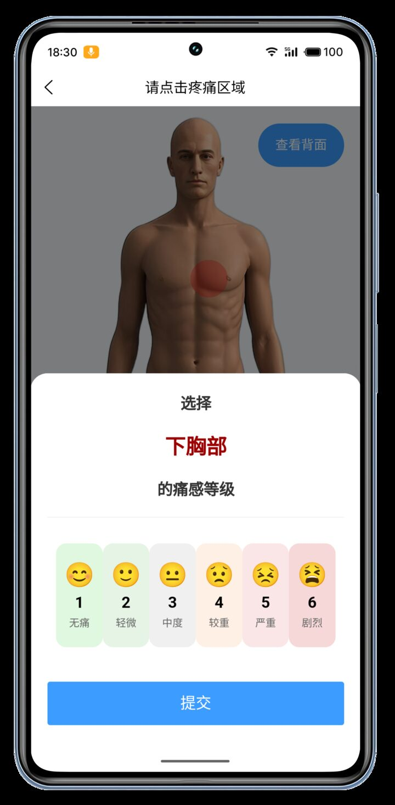
基于 LangChain 多智能体（领域判断 → 查询生成 → 答案合成）与 Neo4j 医疗知识图谱协同，生成含病症分析、急诊预警及就医指导的智能报告。团队实测准确率 91.8%+。

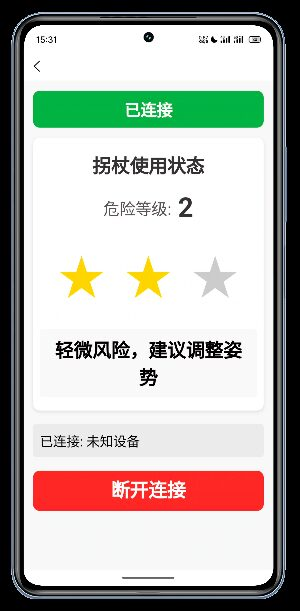

智能拐杖：连接 BLE 硬件，实时监测行走状态，跌倒风险预警与自动求助。
手语识别：实时手语转文字/语音，帮助听障人士与医护人员顺畅沟通。
智能输入：语音转文字填表，简化表单，减少重复输入。
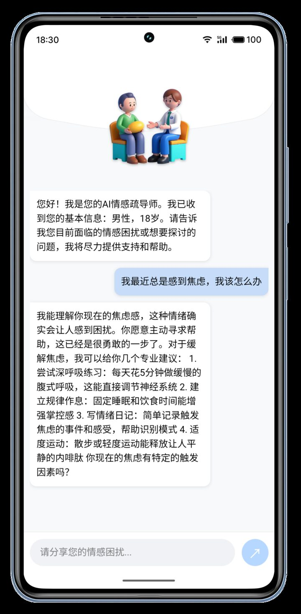
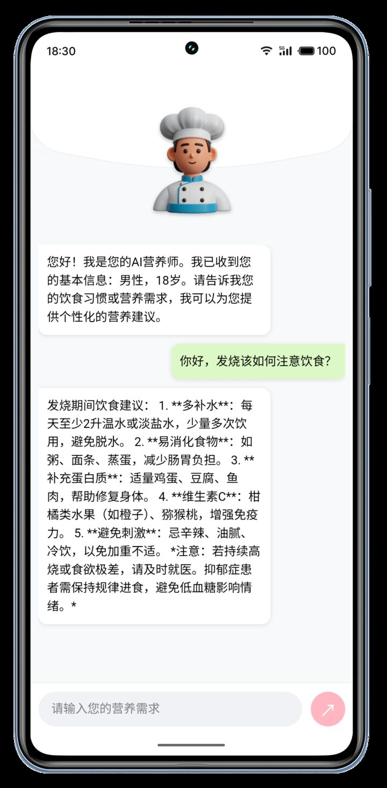
药物咨询：扫描药品包装获取用药指导，评估相互作用和不良反应。
营养师：基于体检与病情提供个性化饮食建议。
心理疏导：匿名心理咨询，情绪管理与压力缓解。
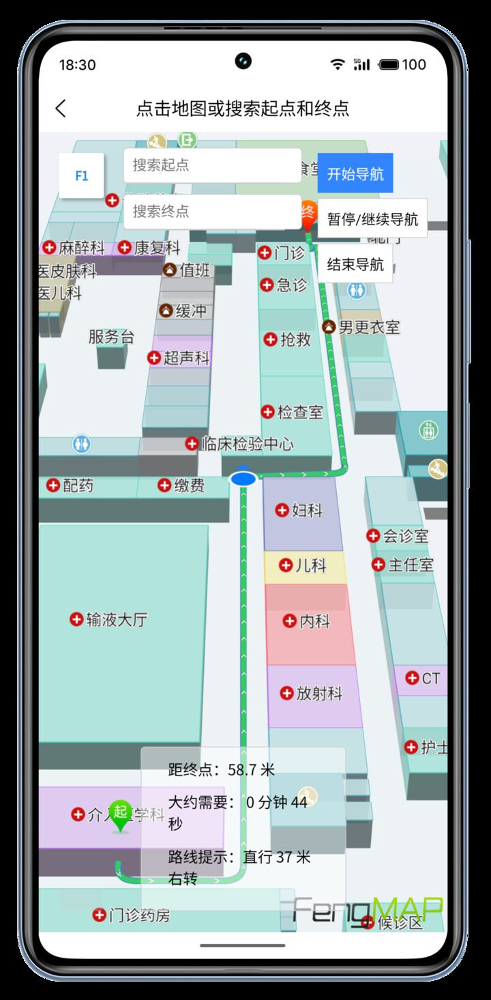
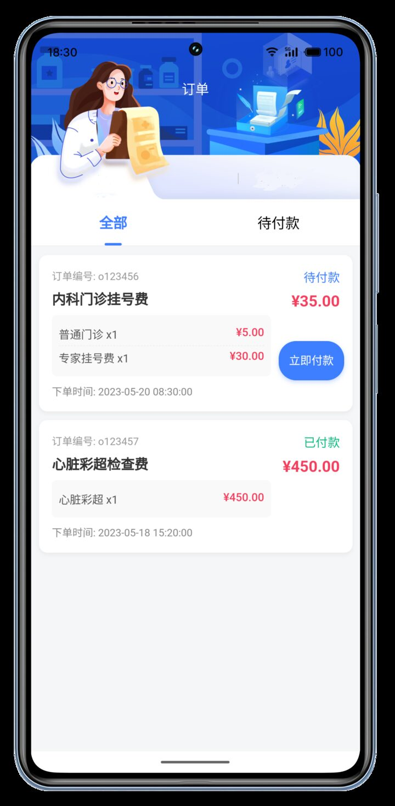
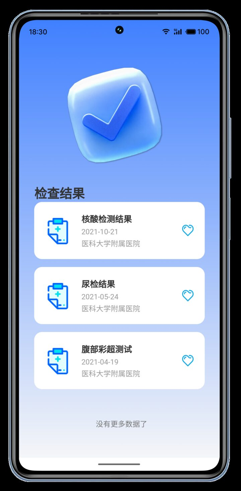
院内导航：3D 医院地图 + 最佳路径规划 + 语音引导，避免院内迷路。
门诊缴费：一键支付，账单明细，医保直连。
就诊凭证：电子化存储，快速出示，无需纸质材料。


智能挂号：选择医生、日期和时段，实时号源，一键预约。
叫号提醒：到号前 10 分钟提醒，避免漏诊。
智能随访 / 安心医程：康复记录、用药提醒、家属远程管理。
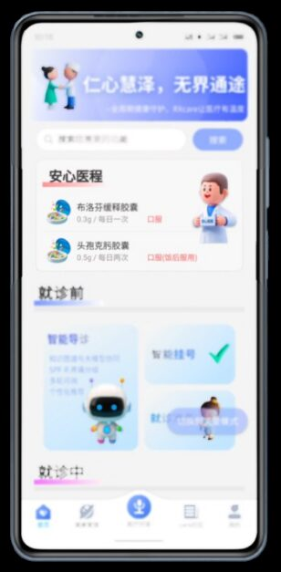
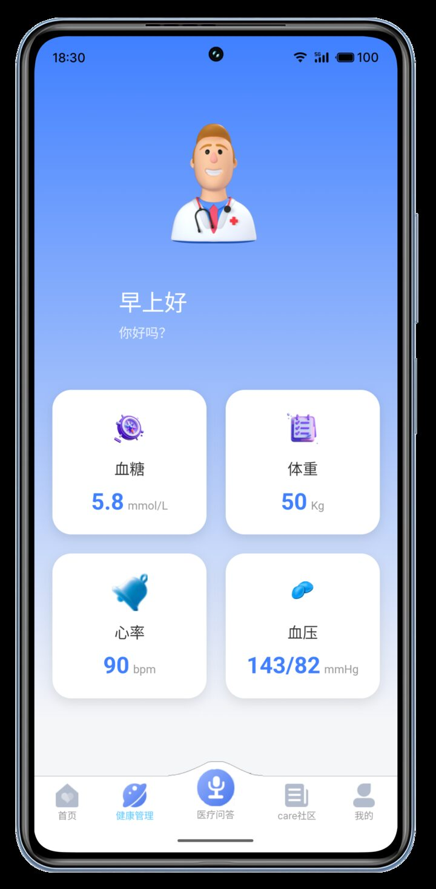
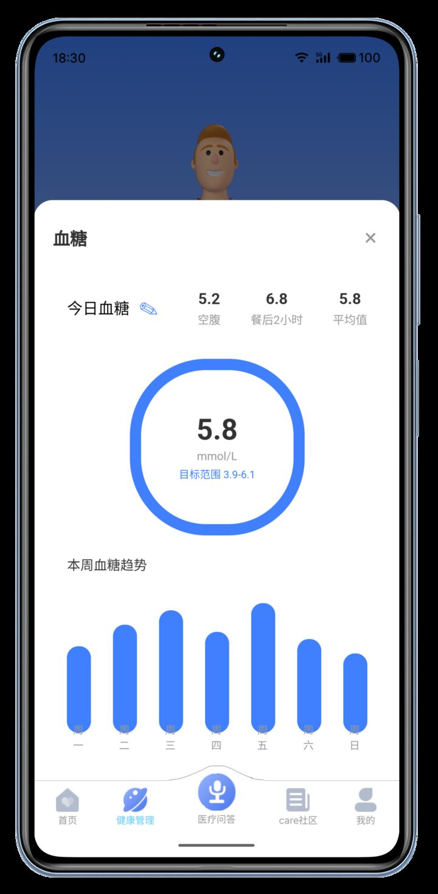
健康档案：整合血压、血糖、体重等数据，趋势图表可视化，支持导出完整档案。
Care 社区：按疾病主题划分专区（糖尿病、心脑血管、孕产等），匿名提问与经验分享。

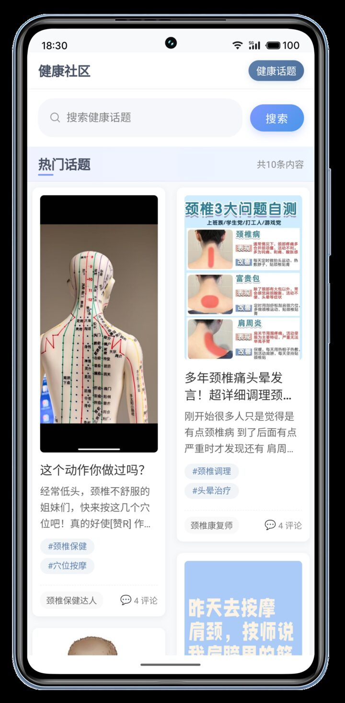
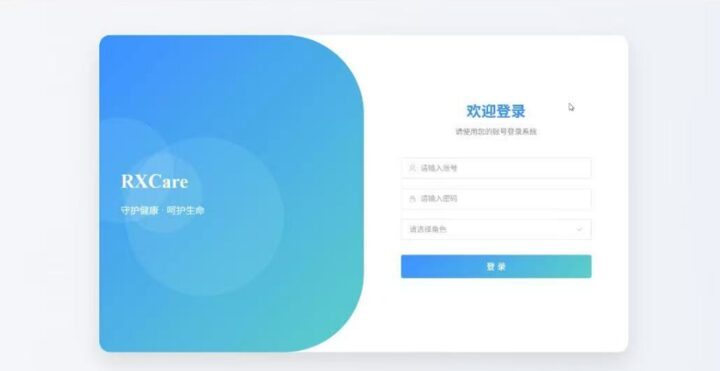
来源：作品说明书 §2.1 系统开发平台与运行平台
本项目为 5 人团队协作的参赛作品
作品编号 2025072180 ，覆盖 APP 用户端、Web 医护端、物联网智能拐杖三端协同架构。 解决就医焦虑、听障人士沟通障碍、老年人流程迷失等社会痛点。